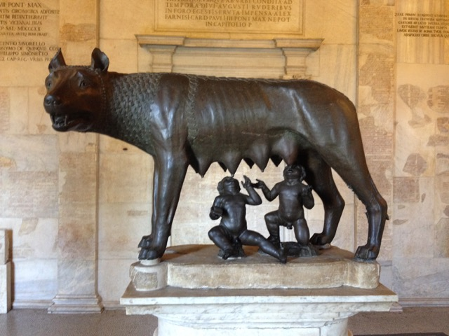
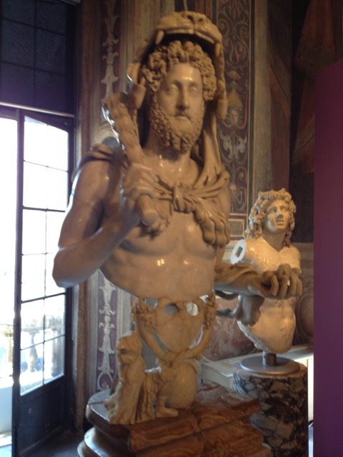

As an exercise, Laura had us make observations of the Campidoglio and critique this space. This was an intimidating thing to do, coming from a non-architectural background and knowing that the space is a masterpiece of Michelangelo's. This became more intimidating, as I tried to find aspects of the space to criticize and found it difficult to find negative aspects of the space. Coming together and talking about our observations, which included discussion of features such as the giant order of columns used, the step down into the central space of the square, and the trapezoidal shape of the square, helped me to be able to appreciate the thought that Michelangelo put into his design. At the same time, the fact that even a masterpiece might have some flaws is a comforting thought that can be applied to many disciplines, and a reminder that it is okay to be imperfect.
Sketch of the plan of Michelangelo's Campidoglio
Capitoleum Museum
Septimius Severus
Portrait of Septimius Severus on Alabaster Bust. Four curls on forehead indicative of Egyptian god Serapus. Dates back to AD 199 and 200.
I was drawn to this piece because of the interesting and beautiful way it combines materials, using marble for the head and alabaster for the cloak around the shoulders of the bust. It is a reminder that not all parts of a sculpture need to come from the same piece of stone, which allows for flexibility of design and creates more design choices to make when bringing a conceptualized sculpture to life.
Bacchic Crater
Crater with Bacchic Scenes M.C. Inv. 1202; Pentelic Marble
I took notice of the Bacchic Crater because of the presence of sculpture where it would not have normally been found in Ancient Greek culture. This is a distinction between the Greeks, who seldom put sculpture on parts of buildings other than the pediment and entablature, and there is only one known amphorae that we have seen on this trip that had sculpture on it. The use of sculpture on containers may have become normal by 1200, after several hundred years of experimentation.
Leone
Sculpture of a Lion
This sculpture of a lion (which had no date posted with it or much information about it) reminded me of the lions statues we saw at Delos and the lions gate at Mycenae. These animals have been depicted in sculpture since the beginning of sculpture itself, and yet they have been depicted has changed dramatically. This could be due to several reasons. Sculpting ability has certainly improved over the centuries, as masterpieces are created and studied and new techniques are crafted and taught to others. But I think that for depictions of lions specifically, sculptors did not have the first-hand experience of seeing a lion close up, in order to take note of the details necessary to create a realistic statue. By the time of the Roman Empire, sculptors would simply be able to go to the nearest amphitheater to witness all kinds of exotic animals there as inspiration for their sculpting, rather than working on a secondhand account of what another sculptor thinks a lion looks like.
Septimius Severus
Bacchic Crater
Leone Statue
The Dying Gaul

The Capitoline Wolf
Head of the Medusa, Bernini
Venus

Hercules
Santa Maria del Populo
The Church of Santa Maria del Popolo was one of my favorite churches that we visited. One reason for this was the experience of learning about Caravaggio’s paintings and Bernini’s sculptures there, and gaining insight into the mindset of Baroque artists by learning about those works. Having only seen very pious religious art up until this point on the trip, the Baroque style stood out to me in a way that it never has before. In art before this point, people were presented as being wise, powerful, or sensual, but never before had they been portrayed as normal. This made Baroque art something that people could connect with on a personal level in a way that would not have been possible before. This applies to Caravaggio’s paintings of the Conversion of Saul and the Execution of Peter in the sense that they are portrayed as ordinary people in potentially embarrassing positions, but it also applies to Bernini’s sculptures in a different way. Bernini’s sculptures at Santa Maria del Popolo can be harmed; when statues had always been portrayed in confident, unflinching positions with perfect posture, Bernini portrays the figure of Habakkuk flinching due to the unexpected presence of an angel and the figure of Daniel dropping to his knees in desperation, praying to God for his life. These postures are evidence of vulnerable emotional states that people can relate to.
Caravaggio's "The Crucifixion of St. Peter"
Main nave of the Church of Santa Maria del Popolo
Caravaggio's "Conversion on the Way to Damascus"
Bernini's sculpture of Habakkuk. Habakkuk's foot sticks out at an unexpected angle, making him appear to be off-balance.
Bernini's sculpture of Daniel. In the corner, a lion tamely licks his foot.